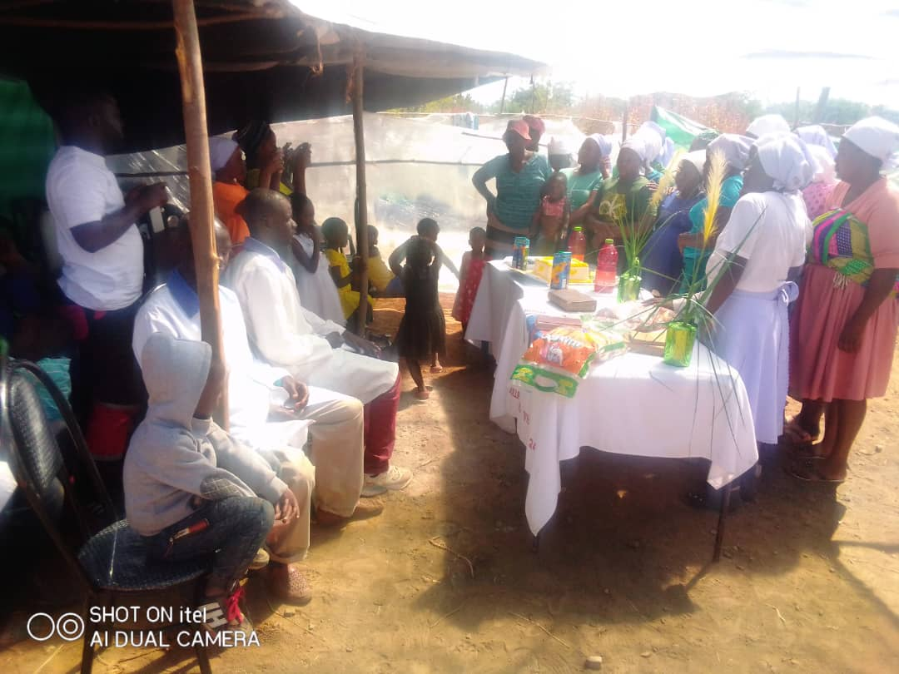
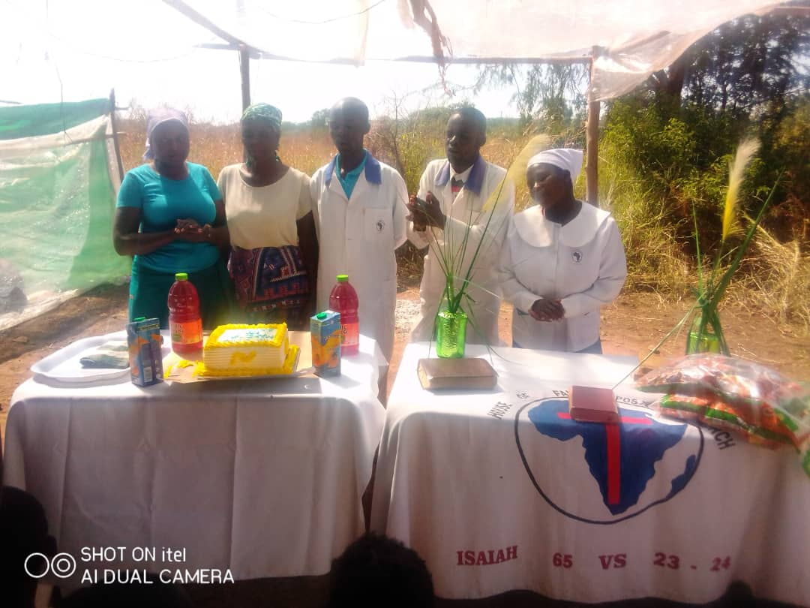
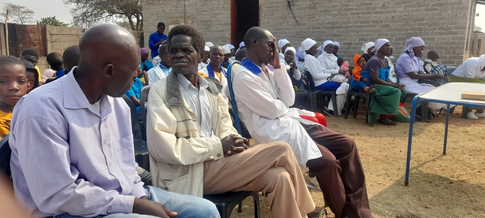
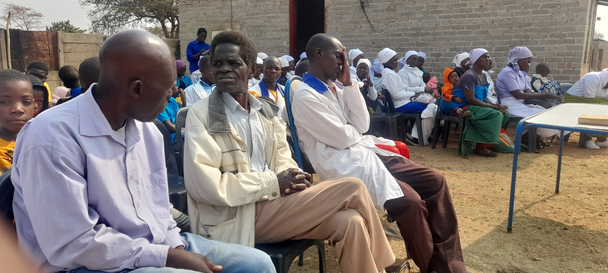

House of Faith is an Apostolic Spiritual House of God situated in Waverly opposite Cecil Estates residential area as you go towards
Cold Storage of Kadoma. It was founded many years ago by Pastor Baba MArezva who has been the leading and spiritual pastor of the
House of the Lord. Over the years the church has grown and aims at bringing salvation and the word of the Lord to the people to
repent, be baptised and be saved. Many have seen the power of our Lord Jesus Christ and have been healed, delivered from their
ailments, state of bondage or spiritual oppression. The church is a welcoming House for the following:


The Afflicted
The Bonded
Hopeless
Suicidal
Marital Problems
Financially Bonded
Barrenness
Lonely and rejected by society
House of Faith is open to all we do not descriminate or select if one has money or has not, the Lord Jesus welcomes you all.
His word says come to me all ye that are heavily bonded that i may give you rest. At the house of Faith we beleive in the true
word of God the bible and trust in his word for his word says in Mathew 7 vs 7 "ask and it shall be given to you; seek and ye
shall find; knock and it shall be opened unto you". We beleive in our Lord and that he is the Lord and God of our lives.

"Tinokugamuchirai nemufaro muimba yaMwari jehovah Musikavanhu neMwanakomana naMweya mutsvene tichiti huyai makasununguka
mugamuchire Ishe Jesu. Hatina rusarura hatisarudze kuti une mari kana hauna munhu wose akakosha kuna Mwari. Tinonamatira pachena hakuna
anobhadhariswa kugamuchira Ishe Jesu or kuwaniswa ruponeso. Hama neshamwari, vakaomerwa nehupenyu, vakarambwa nehama neshamwari, vakarasikirwa
nemabasa tinoti Ishe Jesu vanodzorera hupenyu vokuita chisikwa chitsva muumambo hwaJehovah naIshe Jesu Christo."
 
